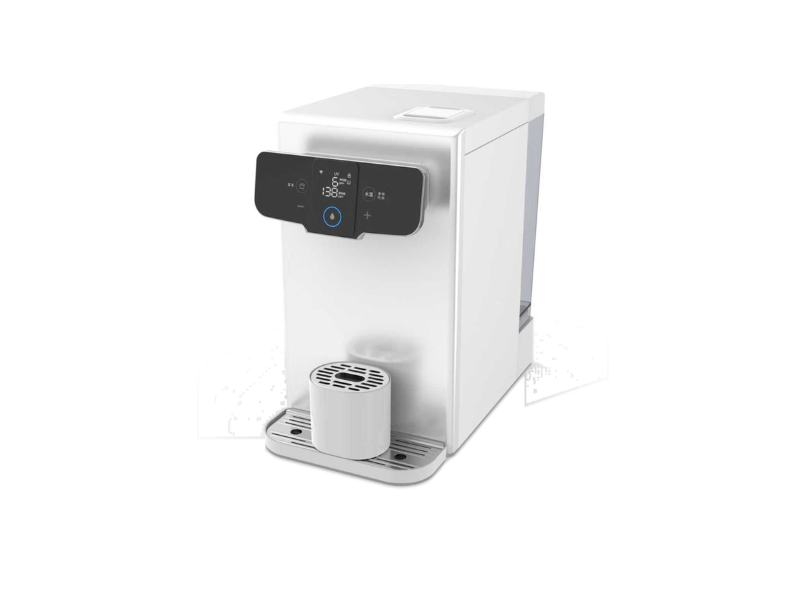

บนเคาน์เตอร์
บนเคาน์เตอร์RP-C09
เครื่องกรองน้ำ RO พร้อมน้ำแข็ง น้ำร้อน และน้ำเย็น
SKU: RP-C09
MOQ: ยืนยันเมื่อสอบถาม
หน้าแรก/ผลิตภัณฑ์/ระบบบนเคาน์เตอร์/ RP-C21

ระบบบนเคาน์เตอร์
เครื่องกรองน้ำ RO ตั้งโต๊ะพร้อมระบบทำความเย็นคอมเพรสเซอร์และถังน้ำร้อน (AM920R)
RP-C21 — เครื่องกรองน้ำ RO ตั้งโต๊ะพร้อมระบบทำความเย็นคอมเพรสเซอร์และถังน้ำร้อน ข้อมูลจำเพาะหลัก: ความจุ RO 75 / 100 GPD ข้อมูลจำเพาะยืนยันตามรุ่นและคำสั่งซื้อ.
RP-C21 เป็นเครื่องกรองน้ำ RO ตั้งโต๊ะพร้อมระบบทำความเย็นคอมเพรสเซอร์และถังน้ำร้อน (ระบบทำความร้อนทันทีแบบฟิล์มหนาเป็นตัวเลือก) มีการต่อน้ำสองแบบ — ต่อท่อน้ำเข้าหรือถังน้ำดิบ — และหน้าจอสัมผัสขนาดใหญ่พร้อมอุณหภูมิและปริมาณที่ปรับได้.
แรงดันไฟฟ้า / ความถี่สามารถปรับตั้งได้ตามประเทศเป้าหมาย การตั้งค่าอื่น ๆ จะยืนยันตามคำสั่งซื้อ.
RP-C21 เป็นเครื่องกรองน้ำ RO ตั้งโต๊ะพร้อมระบบทำความเย็นคอมเพรสเซอร์และถังน้ำร้อน (AM920R) พร้อมระบบทำความร้อนทันทีแบบฟิล์มหนาเป็นตัวเลือก มีการต่อน้ำสองแบบ — ต่อท่อน้ำเข้าหรือถังน้ำดิบ — และหน้าจอสัมผัสขนาดใหญ่พร้อมอุณหภูมิและปริมาณที่ปรับได้ ทำงานที่ 75 / 100 GPD พร้อมปริมาณน้ำบริสุทธิ์ที่กำหนด 4000 L.
ปริมาณสั่งซื้อขั้นต่ำคือเท่าใด?
คำสั่งซื้อครั้งแรกคือ 200 ชิ้น ต่อรุ่น และการสั่งซื้อซ้ำคือ 500 ชิ้น.
สามารถสั่งซื้อตัวอย่างก่อนสั่งซื้อจำนวนมากได้หรือไม่?
ใช่ ตัวอย่างพร้อมภายใน 15 วัน และจะคืนค่าตัวอย่างเมื่อสั่งซื้อจำนวนมากครั้งแรก คำสั่งซื้อจำนวนมากใช้เวลา 40 วันหลังอนุมัติตัวอย่าง และจัดส่ง FOB Shenzhen.
จำเป็นต้องต่อท่อน้ำประปาหรือไม่?
ไม่ — เครื่องนี้รองรับการต่อน้ำสองแบบ ใช้ท่อน้ำเข้าหรือถังน้ำดิบ (2-in-1).
10 แถวข้อมูลจำเพาะจากแคตตาล็อก ROPureOEM.
| กำลังการผลิต RO | 75 / 100 GPD |
|---|---|
| อัตราการไหลน้ำ RO | ≥0.19 L/min (75G); ≥0.26 L/min (100G) |
| การทำความร้อน | ถังน้ำร้อน; ≥90°C, 18 L/h |
| การทำความเย็น | คอมเพรสเซอร์; ≤15°C, 0.6 L/h |
| การกรอง | ห้าในหนึ่ง (PP + คาร์บอน + RO + โพสต์คาร์บอน + การเติมแร่ธาตุสตรอนเทียม) |
| ปริมาณน้ำบริสุทธิ์ที่กำหนด | 4000 L |
| การต่อน้ำ | ช่องน้ำเข้าแบบต่อท่อหรือถังน้ำดิบ (2 ใน 1) |
| ถังน้ำบริสุทธิ์ภายใน | 1 L |
| ขนาด | 395 × 230 × 415 mm |
| กำลังไฟฟ้าที่กำหนด | 2150 W |
ข้อมูลจำเพาะนำมาจากแคตตาล็อก ROPureOEM หากค่ายังไม่ได้รับการยืนยัน จะระบุว่า “ยืนยันตามคำสั่งซื้อ” — เราไม่เผยแพร่ตัวเลขที่ยังไม่ได้รับการยืนยัน.
บนเคาน์เตอร์เครื่องกรองน้ำ RO พร้อมน้ำแข็ง น้ำร้อน และน้ำเย็น
SKU: RP-C09
MOQ: ยืนยันเมื่อสอบถาม
 บนเคาน์เตอร์
บนเคาน์เตอร์เครื่องกรองน้ำ RO บนเคาน์เตอร์พร้อมระบบทำความเย็นแบบคอมเพรสเซอร์
SKU: RP-C10
MOQ: ยืนยันเมื่อสอบถาม
 บนเคาน์เตอร์
บนเคาน์เตอร์ซีรีส์น้ำอัดลม — สองรุ่นย่อย (RP-C14 / RP-C05)
SKU: RP-C14
MOQ: ยืนยันเมื่อสอบถาม

บนเคาน์เตอร์ตระกูลเครื่องทำน้ำอัดลมและน้ำไฮโดรเจนบนเคาน์เตอร์ (P90 / P90-1)
SKU: RP-C15
MOQ: ยืนยันเมื่อสอบถาม